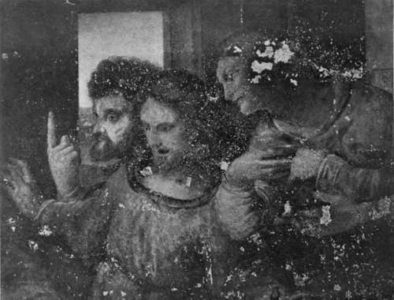

The Pictures. Part 5
Description
This section is from the book "Leonardo Da Vinci", by Edward McCurdy. Also available from Amazon: Leonardo Da Vinci.
The Pictures. Part 5
Much of the outline of Leonardo's picture is muffled in the ground colouring. As in the gray light before daybreak, shapes hesitate to take form. Gradually the mass unravels, and the mist which lies around the central figures resolves itself into a sea of faces, upturned in wonder, and filled with sadness, drawn irresistibly by one impulse, yet hesitating to approach very near to the Madonna. Those who are nearest crouch, shielding their eyes, eager to see, yet dazzled in beholding Christ.
The Madonna, quite unconscious of the throng, sits looking at the Child in her arms. His left hand touches the lid of a casket offered by one of the kneeling Magi. His right is raised in blessing, but it is a baby gesture which has unconsciously become the sign.
A bank stretches across the centre of the picture, and against it five youthful retainers are sitting. They are weary with travel. Two, sunk in sleep, suggest somewhat the figure of S. John in the Last Supper. To the right a woman is clinging with her hands, looking over the top of the bank.
In the right of the picture, above the kneeling king, a youth is seen in profile, looking up, with right hand raised, and an old man is bending forward, his left hand laid on his breast, his right hand shading his eyes. Next to him the emaciated head of an old man recalls the S. Jerome. His hand is lifted. He turns his sunken and apparently sightless eyes to the Virgin.
To the right of these, in left profile, two youthful heads of extreme beauty are looking down at the Child. Below these is a head in deep shadow, bending forward.
To the extreme right of the picture stands a figure in armour, impassive, with head turned aside, looking down, concerning which Mr. Berenson has made the interesting conjecture that Leonardo may have here introduced his own portrait, Botticelli having done this in an exactly similar position. But the fact that the figure is in armour renders the conjecture less probable, and Botticelli's Adoration, unlike Leonardo's, is admittedly a collection of portraits.
The figure is balanced by one on the extreme left of a man with long beard standing with head bowed. The two seem sentinels. They have something of the im-pressiveness of the figures in the Giorgione altarpiece at Castelfranco. They serve as links between the spectator and the action portrayed.
In the left foreground kneels the youngest of the Magi. The third is bending forward from behind the Madonna.
The positions of the three form an equilateral triangle around the Madonna and Child. The figure recurs too frequently in Leonardo's space composition for its incidence here to be other than deliberate, although the triangle is here not in the plane of the picture, as is usual, but in the plane in which the action represented takes place.
Between the two Magi on the left an old man is bending down to the ground, and a woman crouches, looking up and screening her eyes with her hand. Immediately behind these is a group of seven heads, one at least plainly showing Verrocchio's influence. In the background feathery stone-pines grow amidst the ruined masonry.
The Last Supper
S. Thomas, S. James, And S. Philip
Brogi photo
Sta. Maria dclle Grazie, Milan
A horseman on the extreme left is looking away and pointing to the central figure. On another horse to the left of the Madonna are two riders. The first is pointing to the Child. The other has passed his arm beneath that of his companion and holds the bridle.
In the background on the left a figure, leaning over a parapet, is speaking to two horsemen who have entered the portico. In front of the terrace steps stand two sibyls, and at the top a figure is sitting.
A laurel and a palm are growing in the middle space of the picture, between which, beyond the terrace, a horseman is visible, and in the right background two others are tilting at each other. Beyond them are roughly outlined mountain peaks.
" But like so many of his other works," says Vasari, " this also remained unfinished."
Is this in itself the reason, and the departure from Florence a sequel not a primary cause? Did the artist- ever unsatisfied-abandon the work as falling short of his own desired standard of attainment?
It is rather in the record of his other works than in the picture itself that support for the theory must be sought.
Four of Leonardo's drawings have served as studies for the composition known as the Virgin of the Rocks, They offer no ground for inference as to the priority of the picture in the Louvre or that in the National Gallery.
The beautiful silver-point drawing at Turin of the angel's head, unsurpassed, if indeed approached, by either picture in delicacy of modelling, is a preliminary study for the Louvre picture, in which the figure of the angel has suffered from repainting. The angel in the National Gallery picture is more in profile, and the head is more thrown back, and apparently a different study was used for it.
The study of drapery at Windsor,1 which has been used for the kneeling figure of the angel, is of considerably earlier date than the execution of the composition. It has not been exactly followed in either version; but the arrangement of the folds bears a somewhat greater resemblance to that in the picture in the National Gallery.
The drawing in the Louvre on greenish paper for the head of S. John,2 which has suffered from additions by a later hand, is a study for the Louvre picture. It is pricked for transfer to the cartoon. It has been followed very closely. The head in the National Gallery picture is slightly more full face; this fact making a corresponding minute difference in the shadow round the eye, and on the lower part of the cheek. It seems also the head of a somewhat older child.
The drawing at Windsor, in red chalk, for the bust of the Infant Christ, leans far more closely to the National Gallery picture, for which it may be considered a preliminary study. The drawings on greenish paper in silver-point, for the head of Christ, in the Louvre, of which neither Dr. Richter nor Mr. Berenson admit the genuineness, are not exact representations of the attitude in either picture.
1 Braun, 196.
2 Braun, 170.
Continue to:
Tags
leonardo da vinci, pictures, drawings, galleries, statues, da vinci